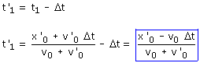
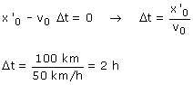

En el apartado anterior hemos obtenido el tiempo que llevaba circulando cada tren en el momento del encuentro:  En la segunda expresión, al aumentar Δt disminuye t'1 y llegará un momento en que este será negativo en cuyo caso no habrá choque. El caso límite corresponderá al valor de Δt que hace t'1 igual a cero.  |